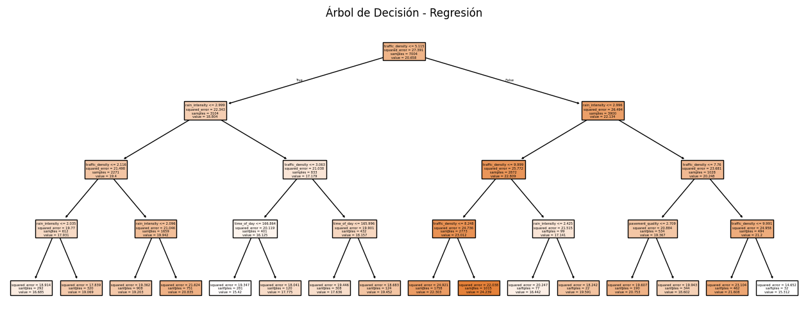
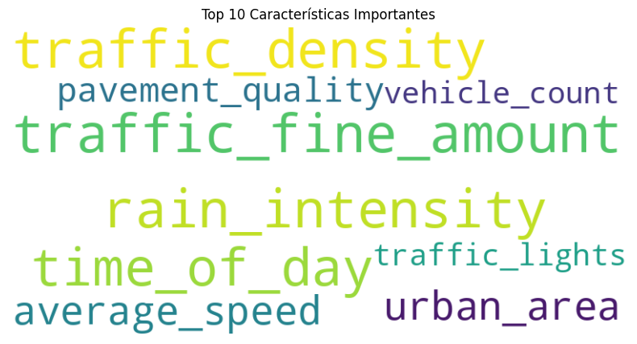
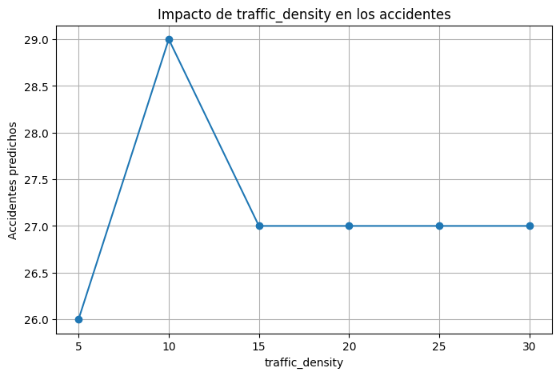

🚦 Predicción de Accidentes de Tránsito
Autores: Calfín & Fernández
🎯 Objetivo
Analizar las condiciones del entorno urbano y vehicular para predecir la cantidad de accidentes de tránsito usando modelos de minería de datos, y comunicar visualmente los hallazgos a partir de datos reales.
🔍 Insights Principales
1. Densidad de tráfico y multas: combinación crítica
A mayor densidad y mayor cantidad de multas, el riesgo de accidentes predichos aumenta significativamente.
2. Lluvia + mal pavimento = más accidentes
Las zonas con pavimento deteriorado y lluvia intensa presentan mayores niveles de accidentes predichos.
3. Variables más influyentes
Según el árbol de regresión, las variables con mayor impacto fueron:
traffic_density, traffic_fine_amount, rain_intensity, vehicle_count.
🧠 Modelo Aplicado
Se utilizó un árbol de regresión (`DecisionTreeRegressor`) con ajuste de hiperparámetros mediante `GridSearchCV`. Se aplicó escalamiento previo de los datos con `StandardScaler`.

📊 Visualizaciones
Aquí puedes insertar tus imágenes exportadas o visualizaciones interactivas:
- Nube de palabras con variables más importantes

- Gráfico de dispersión: Pavimento vs Accidentes

📌 Aplicaciones reales
Este modelo puede ser usado por organismos públicos para focalizar recursos, mejorar la fiscalización y reducir el riesgo de accidentes en condiciones críticas.